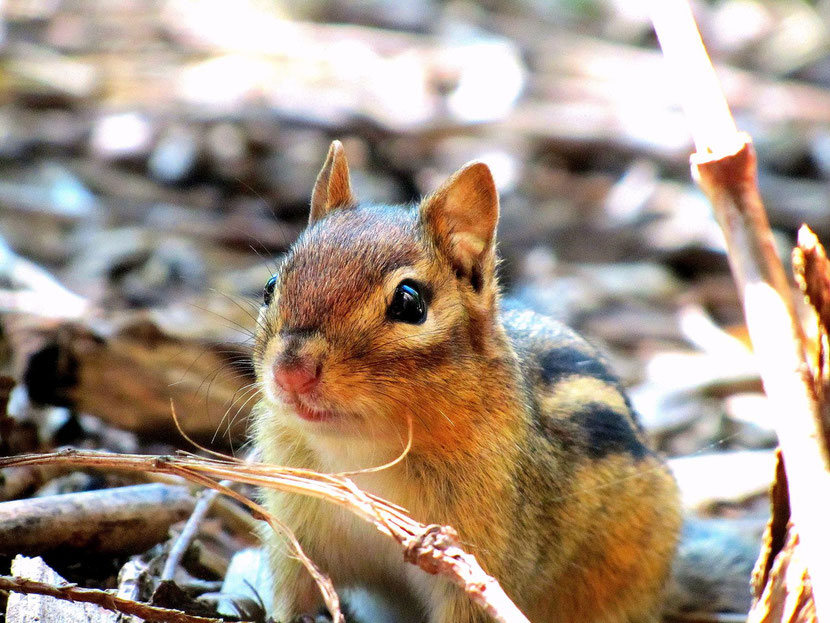

zone géographique : Amérique du Nord
Lieu de vie: Forêts, zones boisées
alimentation: Omnivore
Longévité : 3 ans
Famille: Sciuridés
Taille : 15 cm
mode de vie : Diurne
comportement : Les tamias sont de petits mammifères très bruyants. Ils se nourrissent essentiellement de
graines. Ils ne dédaignent pas les fruits. Ils amassent leur nourriture dans leurs joues pour, plus loin,
déposer leur trouvaille dans leur terrier. Ils font des réserves pour le cas où la saison serait mauvaise. En
effet, lors de leur hibernation, il se réveille de temps à autre pour s’alimenter grâce à cet amas de graines
stockées.